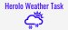

<p-toolbar>
    <div class="ui-toolbar-group-left">
         
    </div>
    <div class="ui-toolbar-group-right">
        <mat-slide-toggle color="warn" labelPosition="before" [checked] ="isCelsius | async" 
            (change)="toggleDegrees($event.checked)">℃\℉</mat-slide-toggle>
        <mat-slide-toggle color="primary" labelPosition="before" [checked]="isDarkTheme | async"
            (change)="toggleDarkTheme($event.checked)">Light\Dark</mat-slide-toggle>
        <button pButton type="button" label="Home" id="homebtn" routerLink="/home"></button>
        <button pButton type="button" label="Favorites" routerLink="/favorites"></button>
    </div>
</p-toolbar>
